Create a Triangle Motion Graphic with the Blender Python API
- Introduction
- Import Dependencies
- Define Helper Functions
- Set up Scene
- Create and Position Camera
- Create Material With Emission Shader
- Create a Cone With the Material
- Turn the Cone Into a Triangle
- Duplicate the Triangle
- Create the Holdout Material
- Add Keyframes
- Conclusion
Introduction
I decided to recreate this short tutorial from YouTube to practice using the Blender Python API. This post goes through the code I came up with to replicate the tutorial.

Import Dependencies
The only dependencies strictly required for this tutorial are bpy and bmesh. The bpy package is the base API for Blender and the bmesh module provides access to Blender’s internal mesh editing API. I also used the math module from the Python Standard Library for one of my helper functions.
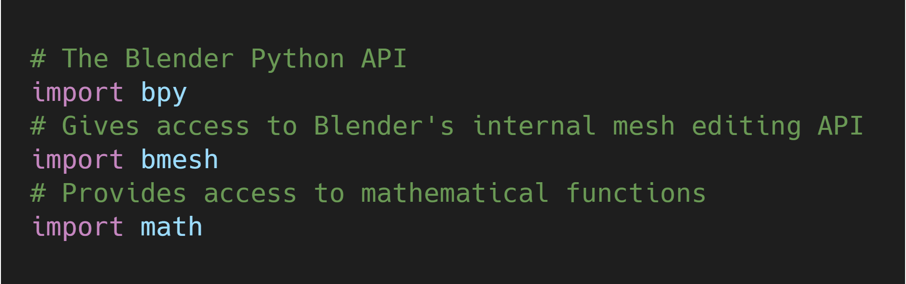
Define Helper Functions
I made some wrapper functions for the standard location, rotation, and scale transformations as well as getting the name of the active object.
You can get the name of the active object with bpy.context.active_object.name.
The three standard transformations can be accessed for individual objects with the following:
bpy.data.objects["object_name"].locationbpy.data.objects["object_name"].rotation_eulerbpy.data.objects["object_name"].scale
I also made a function to empty the default collection so that nothing gets duplicated. Collections can be accessed with bpy.data.collections["collection_name"] or bpy.data.collections[index].
Lastly, I made a function to easily add sequences of keyframes to a given object. The function uses the built-in setattr() method to set the desired value for the target object and uses the object.keyframe_insert() method to add the keyframe.
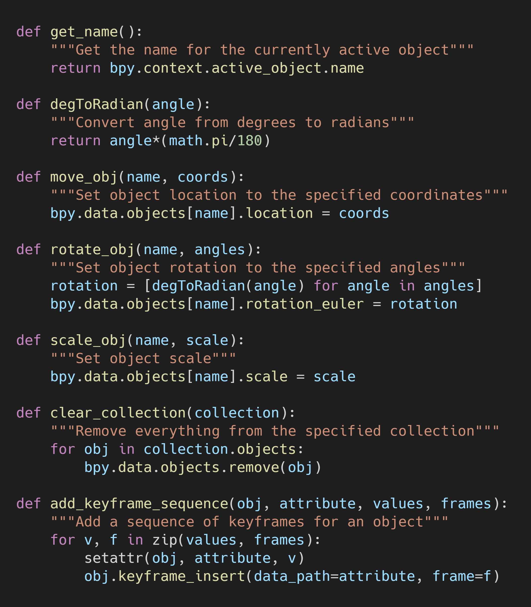
Set up Scene
The first thing I do is set the Color Management property, View Transform, from the default value of Filmic to Standard. This setting can be accessed at bpy.data.scenes["Scene"].view_settings.view_transform.
This tutorial requires transparency to be enabled. This can be done by setting bpy.data.scenes['Scene'].render.film_transparent to True.
Next, I set the background to the desired color. In my case, it’s pure black. The background color is stored in bpy.data.worlds['World'].node_tree.nodes["Background"].inputs[0].default_value.
The last setup step is to clear any objects added from the last time the script was run with the clear_collection() function.
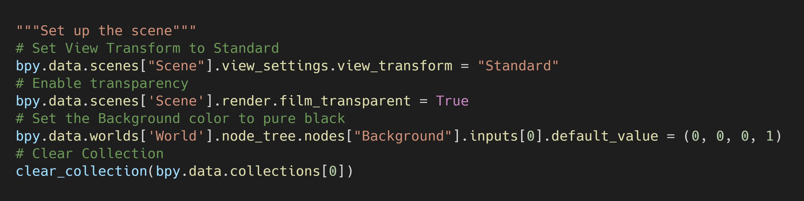
Create and Position Camera
Cameras can be added using the bpy.ops.object.camera_add() method. I then positioned the camera using the wrapper functions I defined earlier.
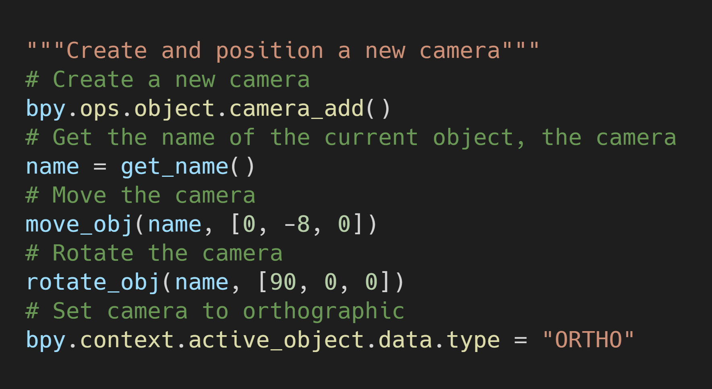
Create Material With Emission Shader
I decided to add some color to the motion graphic so I needed to create a new material. It is recommended to check if the material exists before trying to create it. This can be done in one line as shown below.
material = bpy.data.materials.get(material_name) or bpy.data.materials.new(material_name)
Since there’s is no light, I’ll add an Emission shader. This requires enabling nodes for the material with material.use_nodes = True.
Next, I remove the default Principled_BSDF node as well as any Emission nodes from earlier runs. Nodes can be removed using the material.node_tree.nodes.remove() method.
The Emission node needs to be linked to the first slot in the Material Output node. Nodes are linked using the material.node_tree.links.new() method.
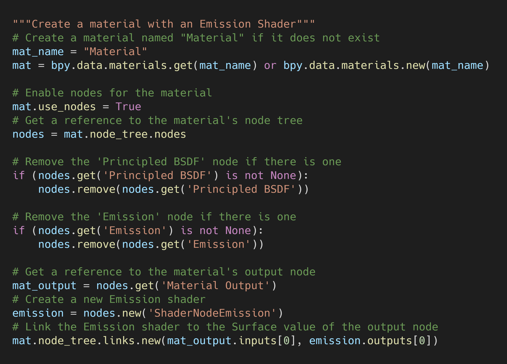
Create a Cone With the Material
The motion graphic is made of two triangles with one being a duplicate of the other. The original triangle started off as a cone with 3 vertices. Cones can be added using the bpy.ops.mesh.primitive_cone_add() method.
I then assign the previously created material to the cone. Materials can be added to an object with object.data.materials.append(material).
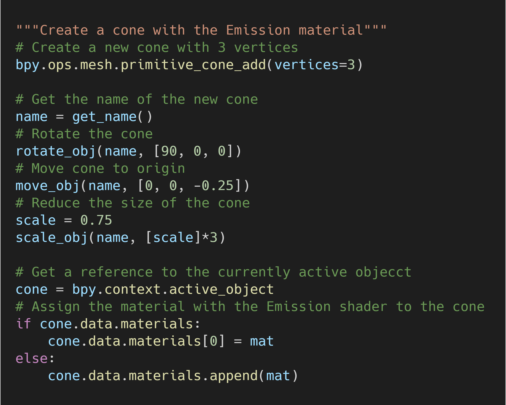
Turn the Cone Into a Triangle
The next step is to remove the tip of the cone. This requires modifying its mesh. Mesh data for the currently selected object is stored at bpy.context.object.data.
To edit the mesh, we need to get a BMesh representation. We first create an empty BMesh with bm = bmesh.new() and then fill it with the mesh using bm.from_mesh(mesh).
We can delete vertices with the bmesh.ops.delete() and setting the context to VERTS.
The mesh then needs to be updated with these alterations using bm.to_mesh(mesh). We need to free the BMesh representation we created with bm.free().
Finally, I reset the origin of the triangle with bpy.ops.object.origin_set().
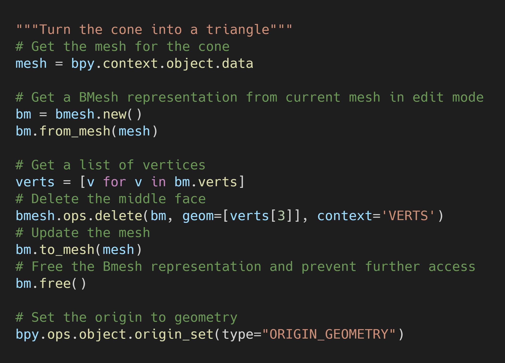
Duplicate the Triangle
We can make the second triangle with bpy.ops.object.duplicate().
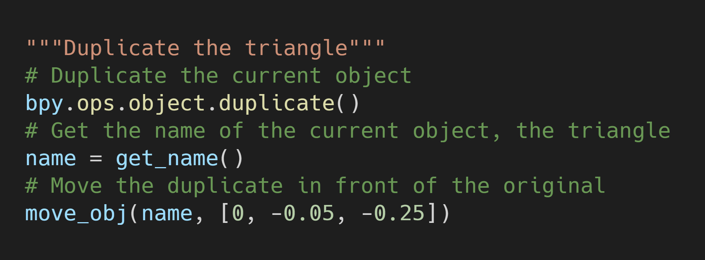
Create the Holdout Material
We need to add a Holdout material to the second triangle so we can see through anything behind it. The process is the same as adding the Emission shader.
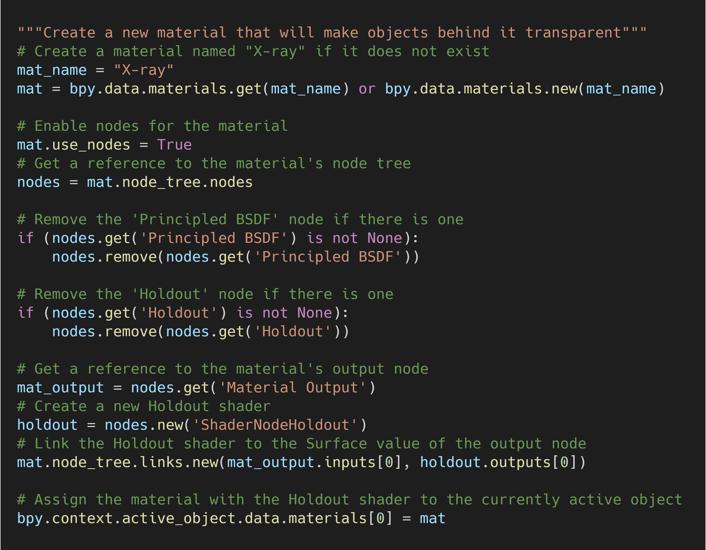
Add Keyframes
Before adding the keyframes, I set the render frame rate as well the start and end frames for the scene. The frame rate is stored at bpy.context.scene.render.fps.
The start and end frames are stored in bpy.data.scenes['Scene'].frame_start and bpy.data.scenes['Scene'].frame_end respectively.
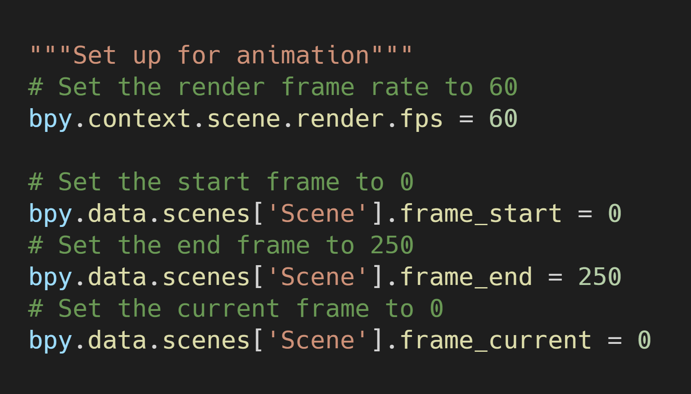
X-ray Triangle
We only need to animate the rotation and scale for the x-ray triangle.
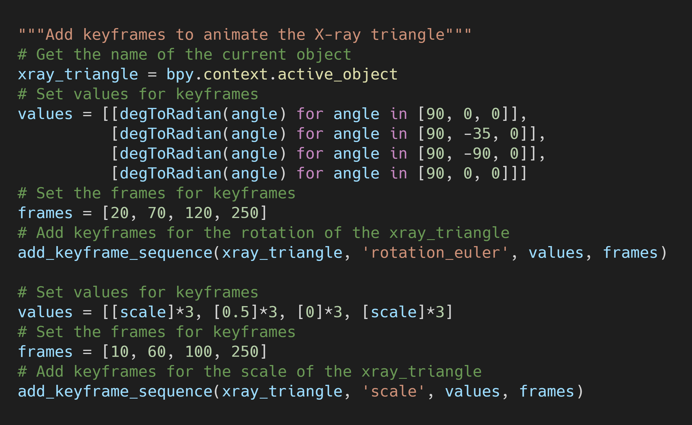
Conclusion
This tutorial did not require learning any new parts of the API after the last tutorial I replicated. I guess in that sense, it was a waste of time. However, I still enjoyed working on it and I like the resulting motion graphic.
Tutorial Resources: GitHub Repository